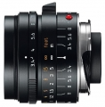

器材库 > 35mm画幅MF定焦镜头 > Super-Elmar M 21/3.4 ASPH.

详细规格
镜头类型
广角镜头
发布日期
2011-06-21
厂家推荐价格
2,025.00 （英镑）
焦距
21mm
最大光圈
f/3.4
最小光圈
f/16
视角（对角）
91, 80, 59
镜头结构
8片/7组
非球面镜片
2片
最近对焦距离
70cm
最大放大倍率
0.03倍
滤镜口径
46mm
镜头卡口
Leica M
防抖
否
颜色
黑色
尺寸
43x53mm
重量
279g
哈斯2014-06-22 23:164.83 分
操作性 4.50耐用性 5.00性价比 4.50解像力 5.00色彩还原 5.00机械结构 5.00
Luft2014-05-11 11:194.83 分
操作性 5.00耐用性 4.50性价比 4.50解像力 5.00色彩还原 5.00机械结构 5.00
lmy2012-12-06 23:074.75 分
操作性 5.00耐用性 4.50性价比 4.00解像力 5.00色彩还原 5.00机械结构 5.00
流浪猴2012-04-18 14:165 分
操作性 5.00耐用性 5.00性价比 5.00解像力 5.00色彩还原 5.00机械结构 5.00
我很认真2012-01-25 15:154.92 分
操作性 5.00耐用性 5.00性价比 4.50解像力 5.00色彩还原 5.00机械结构 5.00